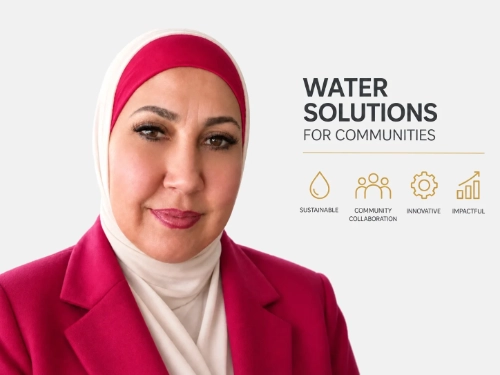

Fundadora
Enas Alghoul
Ingeniera agrícola con un máster en Estudios Ambientales y más de 16 años de experiencia en el Departamento de Desarrollo Rural del Ministerio de Agricultura palestino. Su conocimiento de la agricultura en territorios con escasez de agua impulsa la misión y la estrategia de la compañía.